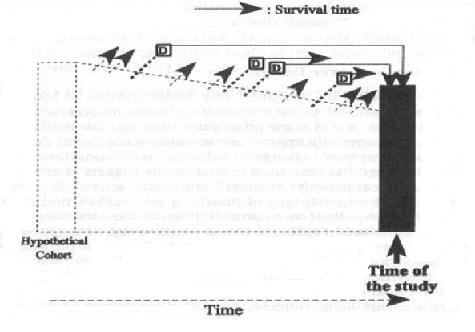

Cross-Sectional Study
Lead Author(s): Jeff Martin, MD
Definition of a Cross-Sectional Study
A cross-sectional study can be described as a sample of a population at one point in time, a cross-section of that population.
Cross-Sectional Design Measures
Measures prevalence of disease at one point in time. Two types:
(1) POINT PREVALENCE: Do you currently have a backache? (e.g., study takes 4 months)
Generally when we speak of prevalence, we are speaking of point prevalence. If we ask for the prevalence of asthma, we usually mean how many persons in the United States have asthma right at a given point in time?
(2) PERIOD PREVALENCE: Have you had a backache in the past 6 months? (e.g., study takes 4 months)
You will also encounter the expression period prevalence in which a wider time period is specified.
- For chronic conditions like asthma, there may not be much difference between a point and a period prevalence, unless you made the period quite long.
- For common, but generally short duration conditions, such as backache or the common cold, however, they differ substantially.
Weakness of Cross-Sectional Design
(1) MAIN WEAKNESS: Cannot determine whether putative cause preceded the disease outcome.
(2) OTHER WEAKNESSES: Cannnot distinguish factors associated with disease from factors associated with survival with disease.
In a cross-sectional study taking aspirin or non-steroidal anti-inflammatories would likely be associated with having a backache, but you would not conclude that those medications cause backache because you know they came after the backache as a treatment not before as a causative agent.
- You won't be able to know that for many of the associations that might be discovered in an analysis of associations in cross-sectional data.
- For that reason it is the weakest design for assessing causation.
Diagram - Cross-Sectional Study Design - Basic Study Design in Analytical Epidemiology
It is easy to describe a cross-sectional study as a sample of a population at one point in time, a cross-section of that population. What is perhaps not so well appreciated is the point illustrated in the diagram below showing the design in the setting of a hypothetical cohort. It demonstrates the prevalent nature of the sample. In other words, only those individuals who were present at the time of the cross-sectional sample have a chance to be included.

So, for example, in the illustration there are two members of the cohort who were diagnosed with the disease outcome who did not survive to the time of the sample.
- Cross-sectional sampling, then, will only capture prevalent cases of disease, which means that the probability of inclusion is related to the length of disease duration or survival.
- It will over-represent those cases of the disease with longer disease duration or survival times.
Likewise, those without disease are also prevalent, meaning that persons with certain characteristics may be more or less likely to be represented in the cross-sectional sample. This would be the case if the individuals who left the population, represented by the arrows in the schematic, differed on characteristics of interest from those who remained to the time of study.
bissell filter suncast shed escali digital food scale
Simplest case is to have a dichotomous outcome and dichotomous exposure variable
Everyone in the sample is classified as diseased or not and having the exposure or not, making a 2 x 2 table.
The proportions with disease are compared among those with and without the exposure.
NB: Exposure=risk factor=predictor
This schematic shows all the possible ratio and difference measures that can be calculated from cross-sectional data.
With cross-sectional data
- We can calculate a ratio of the probability or of the odds of prevalent disease in two groups,
- We cannot measure incidence
References